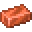

What is Penguin Dust?
As you perform routine activities on Penguinland, you'll find a substance that looks
like pumpkin seeds accumulating in your inventory. This is called Penguin Dust, and it
is the foundation of all magical interactions on the server. Penguin Dust can be used
to imbue objects with spells, and to defend against magical damage.
Imbuement
So far there are two spells that can be imbued into objects. Imbuement is performed
at a crafting table using Penguin Dust, a familiar item specific to the desired spell,
and the item you wish to imbue. The amount of Penguin Dust controls the total magical
reserves of the object, and can be thought of as "mana". The amount of familiar item
controls the spell's rate of discharge. A higher rate of discharge will result in a
stronger spell, but also consume your dust reserves faster. The discharge rate cannot
ever be higher than the total amount of dust left in an object. Imbued spells and
discharge rates can be changed by following the crafting recipe from scratch, but
this will destroy any existing spell that was imbued into the object.

Imbuing a Tool with Fire
Right-clicking with an imbued object in your hand will override the object's default
action discharge the imbued spell, unleashing its effects into the world. An amount of
dust equal to the rate of discharge will be consumed each time an object's spell is
used, and if the amount of dust ever reaches zero, the magical object will break.
However, dust reserves can be replenished by crafting the imbued object with more
Penguin Dust and no familiar item, without destroying the existing spell.

Replenishing a Tool
Spells can be aimed by simply pointing your magical item where you wish for the spell
to land.
Reinforcement
Some of Penguinland's spells can cause damage to players, so it's important to
understand how to defend against these. Any wearable item can be reinforced with
Penguin Dust simply by combining the two in any crafting window. When hit by a
damage-causing spell, a reinforced garment will absorb the strength of that spell
up to the amount of Penguin Dust stored within it. Like imbued items, reinforced
garments will break once their dust reserves are empty, but these can be replenished
in the same way as creating a reinforced garment in the first place. Magic damage
dealt to a player is evenly distributed across all reinforced armor pieces currently
being worn, so uneven dust distributions will make it more likely for a piece to break.

Reinforcing an Armor Piece
Spells
There are two schools of magic currently available, and this list will be updated as
more arise. These schools are:
-
Fire —
Fire magic deals in fireballs, which can cause massive area-of-effect damage to
structures and groups of enemies. Fireballs are slow but devastating harbingers of
doom, invaluable for invading fortresses. Fire magic's familiar item is
 Blaze Powder.
Blaze Powder.
-
Lightning —
Lightning magic deals in lightning bolts, which require precise aim, but deal
devastating damage to single targets. Where fire magic is slow and explosive,
lightning magic is surgically lethal, dealing its damage near instantly with
minimal effect on the environment. Lightning bolts are invaluable for close
quarters combat, narrow corridors, and eliminating high-value targets. Lightning
magic's familiar item is
 Copper Ingot.